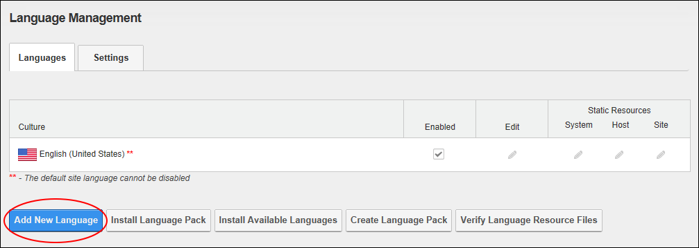
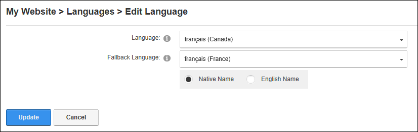
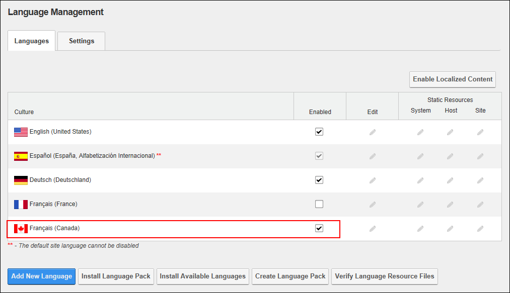

Adding a New Language
How to add a new language to a site using the Languages module. A comprehensive suite of languages is included with the site however if the required language is not listed, or you have a custom language pack, you can instead install a language (See "Installing a Language Pack"). Restricted to SuperUsers.
- Navigate to Admin > Advanced Settings >
 Languages - OR - Go to a Languages module.
Languages - OR - Go to a Languages module.
- Select the Languages tab.
- Click the Add New Language button. This will open the Edit Language page.

- Optional. Choose to view the list of languages in either their Native Name or English Name. Selecting Native Name will show the language and country in the native spelling and alphabet, e.g. français (France), whereas English Name will display both the language and country in English spelling, e.g. French (France).
- At Language, select the language from the drop down list.
- At Fallback Language, select which of the installed languages will be used as a fallback language if this language is removed.
-

- The newly added language is now displayed in the Culture grid and is automatically enabled on your site.
